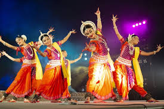

Exploring India's Culture and Heritage
Classical Dance Forms of India
In the late 20th century, Gaudiya Nritya was revived by Mahua Mukherjee, a dancer and scholar. She studied old manuscripts, sculptures, temple art, and folk traditions to reconstruct the movements, costumes, and music of this lost dance form. Her work brought Gaudiya Nritya back into the spotlight as a classical dance of Bengal.
Gaudiya Nritya is a classical dance form that originated in the Gauda region of West Bengal, India. It is a blend of spiritual expression, graceful movements, and traditional storytelling, deeply rooted in Hindu religious practices, especially the Vaishnavite tradition centered around Lord Krishna and Radha.
Gaudiya Nritya is a classical dance form that originated in ancient Bengal, especially the region known as Gauda, which is part of present-day West Bengal. It has roots in the temple traditions and court performances of early Bengal. The dance was used to express devotion and tell stories from Hindu mythology, often dedicated to Lord Krishna and Radha.
In the late 20th century, Gaudiya Nritya was revived by Mahua Mukherjee, a dancer and scholar. She studied old manuscripts, sculptures, temple art, and folk traditions to reconstruct the movements, costumes, and music of this lost dance form. Her work brought Gaudiya Nritya back into the spotlight as a classical dance of Bengal.
Now, Gaudiya Nritya is recognized as one of India's classical dance forms by some cultural bodies. It is taught in dance institutions and performed at festivals. The style combines graceful movements, facial expressions, and rhythmic footwork, keeping the spiritual and artistic heritage of Bengal alive.